なないろまーぶる おまけコレクション

- なないろまーぶるTop
- >> Collection
- >> サトちゃん
- >> ステーショナリー、小物のコレクション
サトちゃんステーショナリー、小物のコレクション
サトちゃんマウスパッド
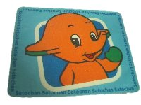
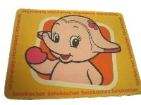
ボール式マウス用。光学式では使えませんでした。（2000年入手）
ペンケース
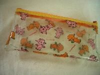
1999年フレッシュカーニバルのペンケース（2000年入手）
ケース・小物入れ
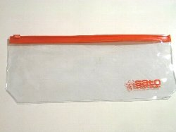
友人からの頂き物です。（2007年入手）
サトちゃんクレヨン
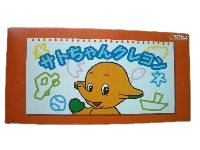
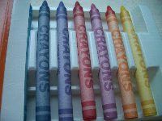
中身は普通です。クーピーみたいです。（2002年入手）
サトちゃんメモ帳
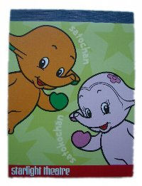
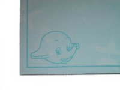
友人からの頂き物です。（2007年入手）
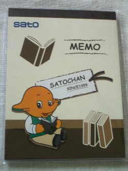
サトちゃんステーショナリーカーニバルのメモ帳（2009年入手）
サトちゃん印鑑入れ
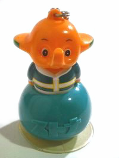
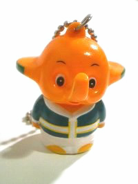
天神さんで購入しました。 何なのかよくわからなかったのですが、後でわかりました。少し太っちょです・・・。（2003年入手）
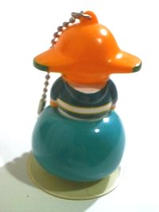
キーホルダーになっているので携帯したり、吸盤が付いているのでどこにでも付けられます。
スポンジ
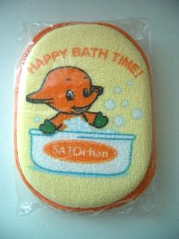
こんなスポンジを使ったら、幸せな気分になれるかも・・・（2000年入手）
ペンスタンド
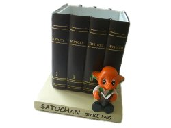
ステーショナリーカーニバルペンスタンド。本を読んでいるサトちゃんも良いですね。（2009年入手）
ボールペン
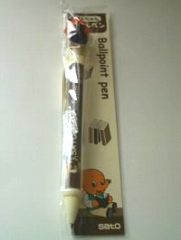
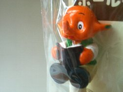
ステーショナリーカーニバルボールペン。メモ帳、ペンスタンドとおそろいです。（2009年入手）
最終更新 2009.03.13
なないろまーぶるはYahoo!カテゴリに登録されています。